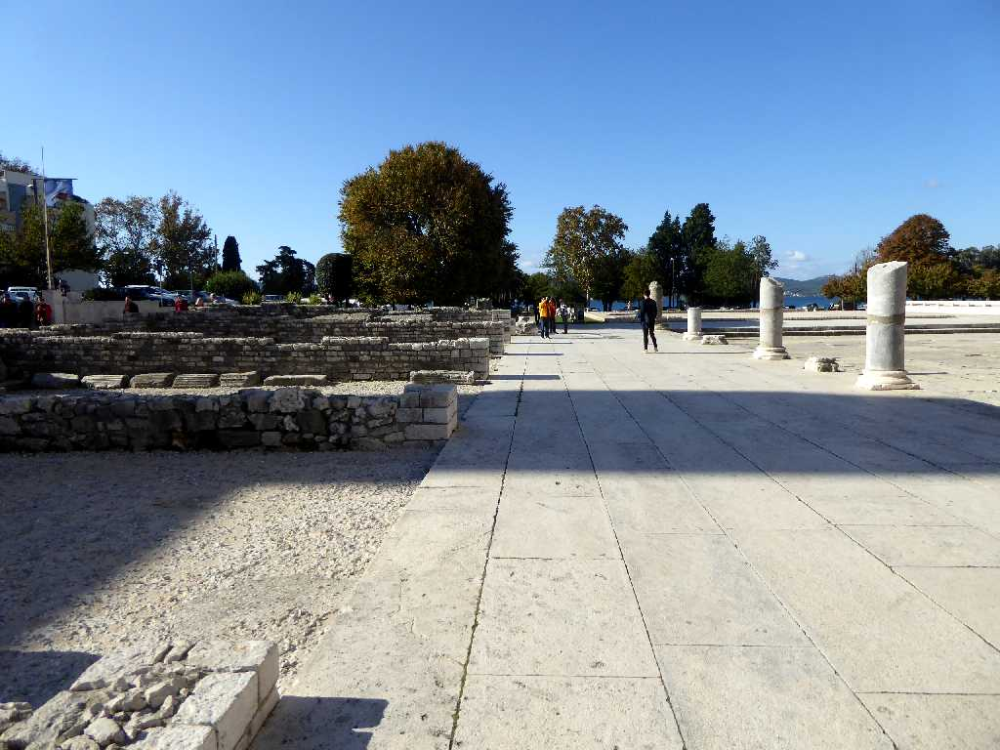
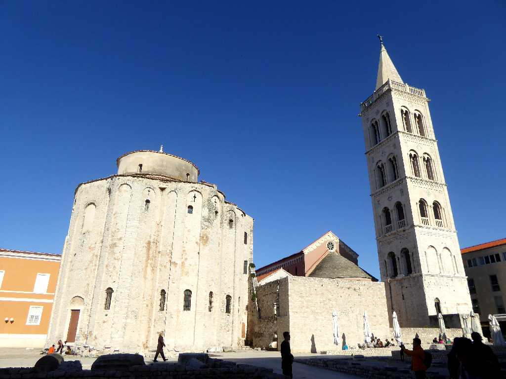
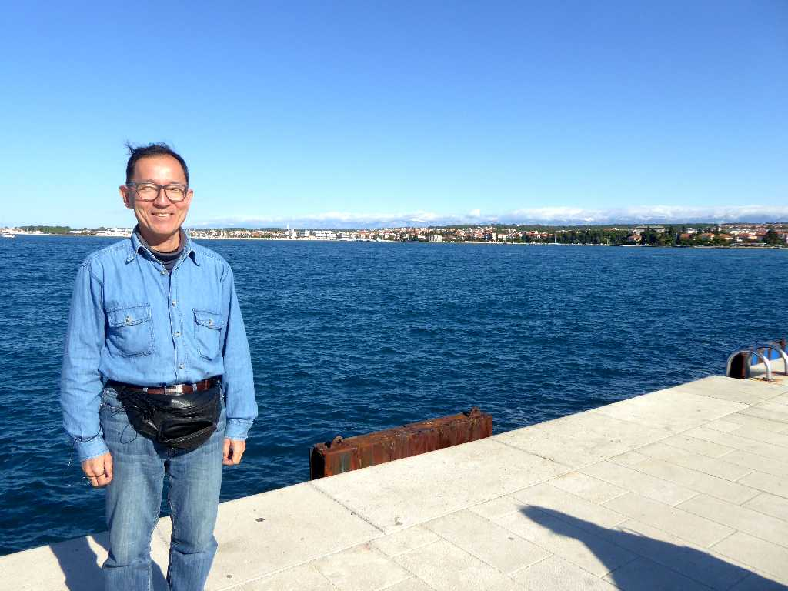

Forum Zadar
紀元前９世紀頃から集落ができ紀元前３世紀頃にはローマが街を創り始めたザダルの中心にあるフォルム広場に残るローマ時代のフォルム神殿跡

Crkva svetog Donata
４世紀にザダルで生まれた聖人ドナトゥスを讃えるため古代ローマ時代の円形建築物を９世紀に改築したロマネスク様式の聖ドナトゥス教会
Morska vrata
１３世紀の旧市街城壁に１５４３年ベネチア人により創られた海の門

October 12 2016 Zadar